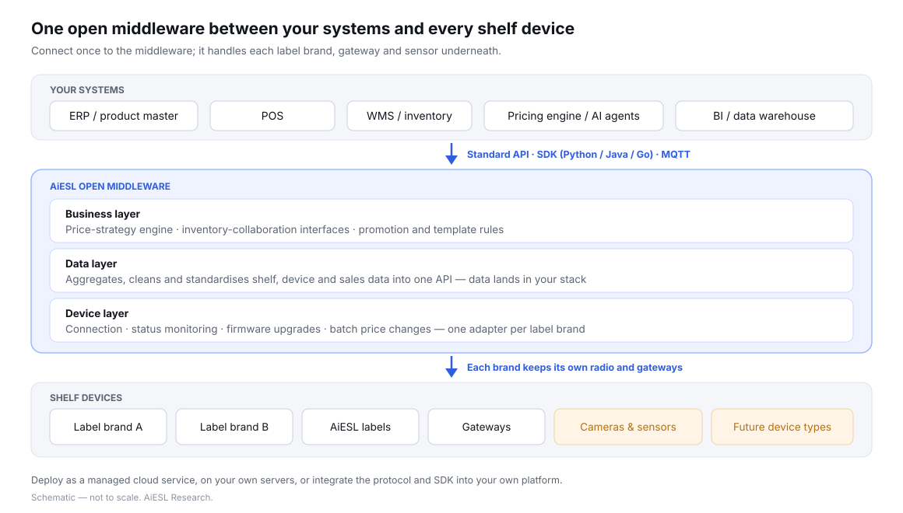

AiESL’s open middleware connects your ERP, POS and pricing systems to electronic shelf labels from 5+ brands over the open MQTT standard. Run it as a managed cloud service, on your own servers, or integrate the protocol and SDK into your own platform — and keep your data in your own stack.
Most ESL systems tie the labels, the radio protocol, the gateways and the software together. Changing any one of them means replacing all of them.
Acquisitions, pilots and price rounds leave chains with two or three label brands — each with its own console, templates and integration.
Retailers who connect labels to their own systems typically spend about a year on software development before chain-wide rollout. That year is the closed model’s real moat.
The AiESL open middleware connects once to your ERP, POS, WMS and pricing systems, and once to each label brand — so every system can reach every shelf device through one standard API. It does three jobs: unified connection of labels, gateways and sensors; data aggregation, which cleans and standardises shelf and device data into one API; and command delivery, which pushes prices, templates and tasks to any connected brand.

| Layer | What it does | Who uses it |
|---|---|---|
| Device layer | Device connection, status monitoring, firmware upgrades and batch price changes, with one adapter per label brand. | Store operations and IT |
| Data layer | Aggregates, cleans and standardises shelf, device and sales data; exposes it through a standard API so it lands in your own stack. | Data and analytics teams |
| Business layer | Price-strategy engine and inventory-collaboration interfaces that drive AI dynamic pricing and shelf monitoring. | Pricing, category and store teams |
Built on the open MQTT standard, the middleware currently manages 5+ label-brand integrations and 30,000+ devices from one console. Ask us for the current brand and firmware list before you plan around a specific installed estate.
Because the middleware sits above the radio layer, it is also designed to take on new device types — vision sensors, footfall cameras, millimetre-wave radar — without rebuilding the integrations you already have. For why this architecture matters as AI agents start operating store systems, see open vs closed ESL systems.
The same middleware is delivered three ways, so the deployment model follows your IT capacity and data rules rather than our preference.
| Managed cloud (SaaS) | On-premise | Integrate it yourself | |
|---|---|---|---|
| Best for | Small and mid-size chains, regional retailers, new-retail start-ups that want no infrastructure to run | Large groups, state-owned retailers and businesses with strict data-sovereignty rules (e.g. GDPR, China’s Data Security Law) | Retail groups with strong in-house IT, IoT platform companies, teams building their own “retail brain” |
| Where it runs | AiESL public cloud; data storage, computing and analytics run in our cloud | Your own data centre or private cloud | Inside your own platform; devices connect directly to it |
| How you start | Buy labels, then bind each device to your cloud tenant by scanning or entering its serial number | We supply the installation package, deployment documentation and database initialisation scripts | We supply the protocol documentation or SDK; you build the control logic |
| Who runs it | We do | Your servers, network and operations team | Your engineering team |
| Options | Tiers by device count, store count and modules (device management, advanced analytics, AI dynamic pricing, traceability interface); enterprise tier with dedicated resources and SLA | Full platform (device + data + business layers) or label management only (connection, monitoring, firmware, batch price changes) | Protocol access, protocol plus development support, or full SDK integration |
Cloud vs on-premise trade-offs — remote access, maintenance, GDPR role and hardware portability — are explained in ESL software: cloud vs your own server. Pricing is quoted per project.
On-premise customers choose between the complete middleware and a lighter label-management package, and can upgrade from one to the other later.
| Package | What is included | Your responsibility |
|---|---|---|
| Full platform | Device layer (label management), data layer (aggregation, cleaning, standard API) and business layer (price-strategy engine, inventory-collaboration interfaces) | Servers, network environment and an operations team |
| Label management only | Core driver layer: device connection, status monitoring, firmware upgrades and batch price changes | As above, plus building or integrating your own business systems on top |
Every on-premise licence includes an annual service plan for upgrades, security patches and technical support. Deployment support comes in three levels: self-deployment from our documentation, remote guidance where our engineers assist installation and configuration, or on-site implementation.
If you are building your own store platform, you do not need our software at all — you can control the devices directly through the documented protocol or our SDK.
| Integration depth | What you receive | Support |
|---|---|---|
| Protocol access | The complete MQTT communication protocol document and the device coding specification | Ticket answers on documentation clarity |
| Protocol + development support | As above | A named engineer who answers protocol questions and helps debug connectivity, from a prepaid support-day package |
| SDK — Developer | SDK core libraries in Python, Java and Go; full API documentation; standard protocol-adapter templates and a development guide; community forum; one year of updates and security patches | Community |
| SDK — Premium Support | Everything in Developer | Priority tickets with a four-business-hour response target; quarterly technical briefings |
| SDK — Enterprise Custom | Custom SDK work for your processes, private protocols or special hardware; optional source-code licence and co-branded solutions | Dedicated solution architect, SLA up to 24/7, on-site deployment support and training |
For how ESLs connect to POS and ERP systems in general — API, MQTT, database sync or file exchange — see ESL integration explained.
Every option runs on the same middleware, so changing deployment model later does not mean re-integrating.
Start on the managed cloud; migrate to on-premise when your estate grows or your data rules tighten.
On-premise customers on label management only can upgrade to the full platform for the data and business layers.
Teams integrating the SDK into their own platform can add the on-premise middleware as a standby or complementary system.
| Situation | Fit | Why |
|---|---|---|
| Two or more label brands | Strong | One console and one integration instead of one per vendor. |
| Keeping installed labels | Strong if your brand is supported | Middleware reuses existing hardware; check the supported list first. |
| Pricing and AI stay in-house | Strong | The data layer exposes everything through a standard API. |
| You want one end-to-end vendor | Weaker | A single-vendor system is simpler to govern; see ESL vendors compared. |
| Unsupported label brand | Not yet | Middleware cannot drive a radio it has no adapter for. |
Talk to a solution engineer about your stores and systems — no sales script.
Talk to an engineerESL middleware is a software layer between a retailer’s business systems and its electronic shelf labels. Instead of each label vendor connecting separately to ERP, POS and pricing systems, the middleware connects once to each side and translates between them. AiESL’s middleware is built on the open MQTT standard and manages 5+ label-brand integrations from one console.
Yes. AiESL exposes a standard API through its middleware, and developers who want to bypass our software can work directly from the MQTT communication protocol document and device coding specification, or use the SDK with core libraries in Python, Java and Go.
Yes. The on-premise option runs in your own data centre or private cloud. We supply the installation package, deployment documentation and database initialisation scripts; you provide servers, network and an operations team. You can choose the full platform or label management only.
If your label brand is one of the 5+ brands we integrate, yes — that is the main reason retailers use middleware. Each brand keeps its own radio and gateways; the middleware drives them from above. Ask us for the current brand and firmware list before planning around a specific estate.
Keep the integration and the data outside any single label vendor. With an open middleware your ERP and POS connect once to a standard API, labels from different brands can be added or replaced, and pricing data lands in your own systems. Put exit terms for data, templates and labels in every contract.
Yes. All deployment options run on the same middleware, so cloud customers can migrate to on-premise as their estate grows or their data rules tighten, and label-management-only customers can upgrade to the full platform without re-integrating.
Tell us which label brands and systems you run — we will confirm compatibility and the best deployment model in writing.
Get a Custom Quote